每日算法(LEETCODE,PYTHON3)
2020.3.2 （2 medium）
第3题 无重复的字符的最长字串
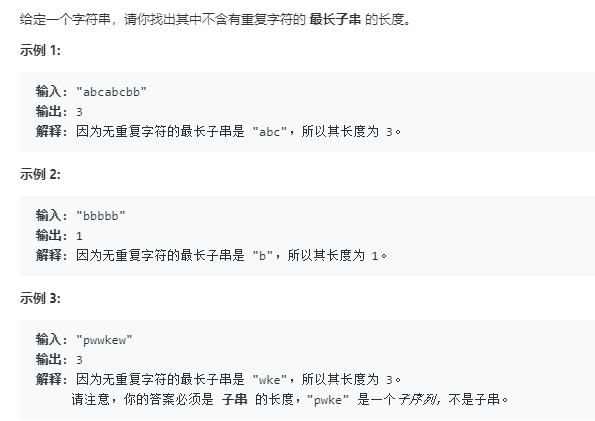
思路1 动态规划
我的最初思路：可以采用动态规划法（区间DP），从区间为2的子串开始计算无重复字符的长度，接着计算下个更大的区间，依次类推，直到区间长度等于字符串长度。
空间复杂度优化：这道题的动态规划状态矩阵中，可以发现有一半的空间（对角线以下）全部为0，所以可以压缩。
时间复杂度优化：分析后发现，这道题其实不需要动态规划，因为本质上没有重叠子问题。我尝试了两层循环遍历字符串的所有子串，一旦出现重复就可以跳出与当前最大长度比较，后面的子串不用再比较了，必有重复的字符。时间复杂度$O(N^2)$
思路2 滑动窗口法（字符串题目的常用方法，之前在TCP协议中学习过）
使用左右两个指针维护一个无重复字符的窗口，两个指针初始都在0处。通过右指针不断向右延伸添加新的字符，并记录当前窗口大小，每次与当前最大值比较，如果大于当前最大值，则可以更新。当窗口延伸至新字符已存在于窗口内时。把窗口左侧的字符不断移除（左指针收缩），直到当前窗口无重复子串。直到右指针触及字符串尾部，此时可以输出当前最大长度即可。
滑动窗口法减少了对字符串的重复遍历。
class Solution:
def lengthOfLongestSubstring(self, s: str) -> int:
if not s:return 0 #字符串为空的处理
left = 0
lookup = []
n = len(s)
max_len = 0
cur_len = 0
for i in range(n):
cur_len += 1
if s[i] in lookup:
pos=len(lookup)-lookup[::-1].index(s[i]) #寻找重复字符出现在窗口内的最后一次位置，直接将左指针移动到该位置后面即可。
lookup=lookup[pos:]
left += pos
cur_len -= pos
if cur_len > max_len:max_len = cur_len
lookup.append(s[i])
return max_len第4题 寻找两个有序数组的中位数
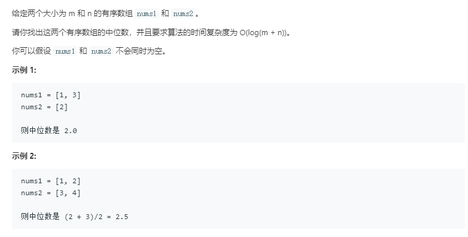
思路1 指针遍历
我的方法：归并排序的思想，通过设置两个指针对两个有序数组进行归并排序，若已排序到中位数位置，则输入当前指针指向的数。
缺点：时间复杂度$O(M+N)$，较高。空间复杂度可以优化至$O(1)$，即只存当前数和前一个数。
要想获得log级别的时间复杂度，需要使用二分法或者堆。
class Solution:
def findMedianSortedArrays(self, nums1: List[int], nums2: List[int]) -> float:
mid_pos=(len(nums1)+len(nums2)-1)/2
p=0
q=0
li=[]
count=-1
while (p!=len(nums1))and(q!=len(nums2)):
if (nums1[p]<=nums2[q]):
li.append(nums1[p])
count+=1
p+=1
if (count>=mid_pos):
if mid_pos%1!=0:
return (li[-1]+li[-2])/2
else:
return li[-1]
else:
li.append(nums2[q])
count+=1
q+=1
if (count>=mid_pos):
if mid_pos%1!=0:
return (li[-1]+li[-2])/2
else:
return li[-1]
if (p==len(nums1)):
for i in range(q,len(nums2)):
li.append(nums2[i])
count+=1
if (count>=mid_pos):
if mid_pos%1!=0:
return (li[-1]+li[-2])/2
else:
return li[-1]
elif (q==len(nums2)):
for i in range(p,len(nums1)):
li.append(nums1[i])
count+=1
if (count>=mid_pos):
if mid_pos%1!=0:
return (li[-1]+li[-2])/2
else:
return li[-1]思路2 递归二分
为了使时间复杂度指数倍地下降，我们以数组[1，3，4，9]和[1，2，3，4，5，6，7，8，9，10]为例。计算得知：（1+14）/2=7.5，所以二者合并后的中位数为：第7小数和第8小数的平均值。
首先，我们学习一种二分法求解两个有序数组合并后第k小的数的方法，我们以第7小数为例：
1.先计算7整除2的商为3，然后比较第一个数组和第二个数组的第3个数（如果某个数组的元素不足3个，则比较它的最后一个数）。将较小的那个数及之前所有的数从所在的数组中去除。（此时它们必在合并后前6小的数中，具体证明可以自己推导一遍）。
2.此时，求解第7小的数变为：在更新后的两个数组中求解第4小的数（因为已经确定了3个）。
3.计算4整除2的商为2，然后比较两个数组的第2个数，与第1步中类似，将较小的数及之前的所有数从所在数组中删除。
4.此时，求解第4小的数变为：在更新后的两个数组中求解第2小的数（因为又确定了2个）。
5.重复以上过程，直到问题变为求解第1小的数，这时比较两个数组中的第1个数，返回较小值即可。
通过以上算法，我们可以用二分删除法计算出合并后第7小数和第8小数，然后便可计算中位数。
- 时间复杂度:每进行一次循环，我们就减少 k/2 个元素，所以时间复杂度是 $O(log(k))$，而 k=（m+n）/2，所以最终的复杂也就是 O（log（m+n））。
class Solution:
def findk(self,nums1,nums2,k):#求解合并后第k小数
m=k//2
if (len(nums1)>len(nums2)):#保证第一个数组较小
return self.findk(nums2,nums1,k)
if (len(nums1)==0):#如果第一个数组为空，直接返回第二个数组的第k个数即可
return nums2[k-1]
i=min(len(nums1),m)#防止第一个数组长度不足m
if (k==1):#如果求解第1小数，则直接比较二者第1个数即可
return min(nums1[0],nums2[0])
if (nums1[i-1]>nums2[m-1]):#删除第二个数组的前m个数，再递归查找
return self.findk(nums1,nums2[m:],k-m)
else:#删除第一个数组的前i个数，再递归查找
return self.findk(nums1[i:],nums2,k-i)
def findMedianSortedArrays(self, nums1: List[int], nums2: List[int]) -> float:
if (len(nums1)+len(nums2)+1)%2!=0:#数组总长为偶数
return (self.findk(nums1,nums2,int((len(nums1)+len(nums2)+1)/2))+self.findk(nums1,nums2,int((len(nums1)+len(nums2)+1)/2)+1))/2
else:#数组总长为奇数
return self.findk(nums1,nums2,int((len(nums1)+len(nums2)+1)/2))- 空间复杂度:O（1）。因为这里使用了尾递归！
什么是尾递归
以递归方式实现阶乘函数的实现：
int recsum(int n) {
if (n < 0)
return 0;
else if(n == 0 || n == 1)
return 1;
else
return n * fact(n - 1);
}以尾递归方式实现阶乘函数的实现：
int tailrecsum(int n, int res=0)
{
if (n < 0)
return 0;
else if(n == 0)
return res;
else
return facttail(n - 1, n + res);
}非尾递归，下一个函数结束以后此函数还有后续，所以必须保存本身的环境以供处理返回值。
尾递归，进入下一个函数不再需要上一个函数的环境了，得出结果以后直接返回。
尾递归的判断标准是函数运行最后一步是否调用自身，而不是是否在函数的最后一行调用自身。
上述例子中：
递归方式的倒数第二步是调用自身求解recsum（n-1），而最后一步是将recsum（n-1）的结果与n相乘并返回，所以rescum(n)的运算依赖于rescum（n-1）的运算。需要将本层函数压栈保存，当计算完最后一层后，再进行层层返回，得出结果。
尾递归方式的最后一步就是调用自身求解n-1时的结果，并将当前层的结果作为参数传入下一层，不需要再返回当前层进行运算。下层计算结果对上层“无用”（上一层运算已经做完，不依赖后续的递归），为了效率，可以直接将下一层需要的空间覆盖在上一层上。
总结：
尾递归，比线性递归多一个参数，这个参数是上一次调用函数得到的结果；所以，关键点在于，尾递归每次调用都在收集结果，避免了线性递归不收集结果只能依次展开消耗内存的坏处。
使用尾递归可以带来一个好处：因为进入最后一步后不再需要参考外层函数（caller）的信息，因此没必要保存外层函数的stack，递归需要用的stack只有目前这层函数的，因此避免了栈溢出风险。
本题中，所有递归调用都是当前层递归的最后一步，所以不需要额外的栈空间保存当前层，时间复杂度为O（1）。
2020.3.3 （2 medium）
第5题 最长回文子串
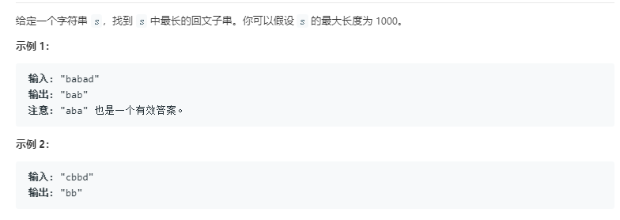
思路1：
区间动态规划+状态空间压缩，利用区间首尾字符是否相等，且去除首尾字符后的子串是否为回文串，来判断当前区间是否为回文子串。
时间复杂度：$O(N^2)$
空间复杂度：$O(N^2)$（可以压缩一半）
思路2：
中心扩展法，不需要额外的状态矩阵。对于一个长度为n的字符串，有2n-1个中心（奇偶回文串分类讨论）可以选取，由中心向两侧扩散寻找该中心所能构成的最长回文子串，若大于当前最大值，则将最大值替换为当前长度。
时间复杂度：$O(N^2)$
空间复杂度：$O(1)$
class Solution:
def longestPalindrome(self, s: str) -> str:
max_length=''
for i in range(len(s)):
if (i!=len(s)-1):
if len(self.expandcenter(s,i,i))>len(max_length):
max_length=self.expandcenter(s,i,i)
if len(self.expandcenter(s,i,i+1))>len(max_length):
max_length=self.expandcenter(s,i,i+1)
else:
if len(self.expandcenter(s,i,i))>len(max_length):
max_length=self.expandcenter(s,i,i)
return max_length
def expandcenter(self,s,l,r):#中心扩展法向两侧搜索判断
if (l==r):#奇回文串
length=1
while True:
l-=1
r+=1
if (l>=0)and(r<=len(s)-1)and(s[l]==s[r]):
length+=2
else:
return s[l+1:r]
else:#偶回文串
length=0
while True:
if (l>=0)and(r<=len(s)-1)and(s[l]==s[r]):
length+=2
else:
return s[l+1:r]
l-=1
r+=1进阶算法：
Manacher算法，时间复杂度只有$O(N)$，但比较复杂。可以参考https://www.jianshu.com/p/392172762e55
第6题 Z 字形变换
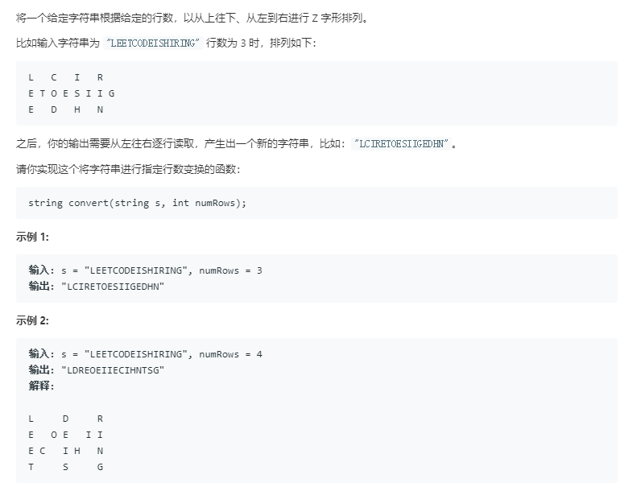
思路1：
通过观察变换前后的字符串，利用规律求解，直接使用下标运算。
class Solution:
def convert(self, s: str, numRows: int) -> str:
a=2*numRows-2
result=''
if (a==0):
return s
for i in range(numRows):
t=i
while(t<len(s)):
result+=s[t]
delta=2*(numRows-i-1)
if (i!=0) and (t+delta<len(s)) and(delta>0):
result+=s[t+delta]
t+=a
return result时间复杂度：$O(N)$
空间复杂度：$O(1)$
思路2
按顺序遍历字符串，并设置与行数相等的数组。遍历时，按照Z字形变化的格式放入对应的数组（行数先加1，遍历到底部再减1，遍历到顶部再加1，直到遍历完）
class Solution:
def convert(self, s: str, numRows: int) -> str:
if numRows < 2: return s
res = ["" for _ in range(numRows)]
i, flag = 0, -1
for c in s:
res[i] += c
if i == 0 or i == numRows - 1: flag = -flag
i += flag
return "".join(res)2020.3.4 （1 hard 1 medium）
第10题 正则表达式匹配
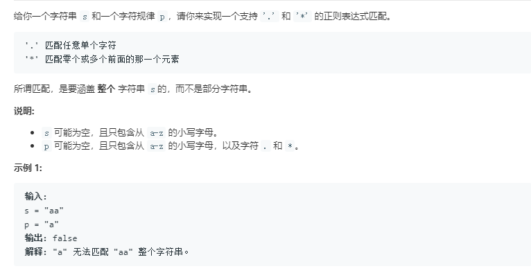
思路:
本题可以用递归求解，但时空复杂度很高。
考虑到本题符合动态规划的两个基本要求：（1）重叠子问题，（2）最优子结构。所以本题可以使用动态规划来求解。
解决可递归问题的三种方法：
- 递归：自顶向下，代码简单，但是复杂度高，可能会进行重复的计算，同时会使用大量的栈空间。
- 备忘录：自顶向下，将递归中的子问题求解结果保存起来，防止重复计算，降低了时间复杂度，但栈空间的消耗依然存在。
- 动态规划：自底向上，使用状态矩阵，由子问题通过状态转移方程递推出最后的结果。
本题中，可以使用状态矩阵$dp(i,j)$表示text[i:]和pattern[j:]是否能匹配。我们可以用更短的字符串匹配问题来表示原本的问题。
当首字母匹配且第二个字母为”*”时，可以尝试转移到匹配0次（目标串不变，模式串变）或1次（目标串变，模式串不变，因为此时可以多次匹配）的状态矩阵。
当首字母不匹配且第二个字母为”*”时，转移到匹配0次（目标串不变，模式串变）的状态矩阵。
首字母匹配且第二个字母不为”*”时，转移到首字母匹配1次（目标串和模式串都变）的状态矩阵。
否则，当前状态为False，即无法匹配。
$dp(-1,-1)$说明此时模式串和目标串完成了全匹配，可以成功，默认为True。
class Solution(object):
def isMatch(self, text, pattern):
dp=[[False for x in range(len(pattern)+1)] for x in range(len(text)+1)]
dp[-1][-1]=True #两个字符串都为空必然匹配
for i in range(len(text),-1,-1): #为什么i从len(text))开始，而j从len(pattern)-1开始：字符串为空，正则表达式不为空，可能匹配成功（存在*），而正则表达式为空，字符串不为空，必然不可能匹配成功
for j in range(len(pattern)-1,-1,-1):
f_match=(i<len(text))and(pattern[j] in [text[i],'.']) #第一个对i的限制条件是为了防止后面访问text[i]时数组越界
if (j+1<len(pattern))and(pattern[j+1]=='*'):
if f_match:
dp[i][j]=dp[i][j+2] or dp[i+1][j]
else:
dp[i][j]=dp[i][j+2]
else:
if f_match:
dp[i][j]=dp[i+1][j+1]
return dp[0][0]第11题 盛最多水的容器
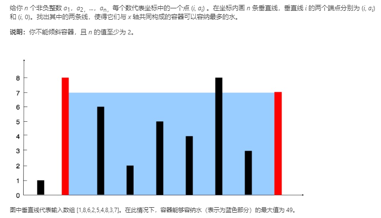
思路:
双指针法（这种从两端向内收缩的双指针我叫做双侧指针，如第3题中滑动窗口的同一侧出发的指针我叫做快慢指针）。
由于容器的容积只与短板有关，我们可以使用两个指针从数组的两侧每一次向内收缩短板，计算当前的容积，直到两个指针相交。
为什么只收缩短板：如果收缩长板，那么移动后的板长要么小于移动前的短板长度，要么大于短板长度，前者会使容积变小，后者会使容积不变，所以我们只有移动短板才可能使容积变大。
时间复杂度：$O(N)$
空间复杂度：$O(1)$
class Solution:
def maxArea(self, height: List[int]) -> int:
max_v=0
left=0
right=len(height)-1
while (left<right):
v=min(height[left],height[right])*(right-left)
if v>max_v:
max_v=v
if (height[left]<height[right]):
left+=1
else:
right-=1
return max_v2020.3.5 （4 medium）
第12题 整数转罗马数字
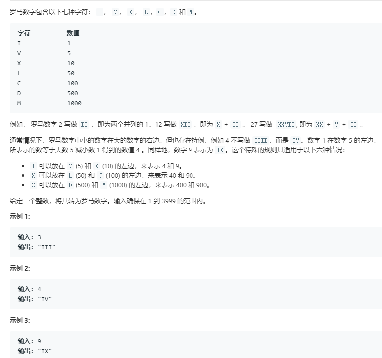
思路:
贪心算法，每次取当前能够匹配的最大罗马数字进行选择。类似于用最少的纸币凑出整数。
class Solution:
def intToRoman(self, num: int) -> str:
# 把阿拉伯数字与罗马数字可能出现的所有情况和对应关系，放在两个数组中
# 并且按照阿拉伯数字的大小降序排列，这是贪心选择思想
nums = [1000, 900, 500, 400, 100, 90, 50, 40, 10, 9, 5, 4, 1]
romans = ["M", "CM", "D", "CD", "C", "XC", "L", "XL", "X", "IX", "V", "IV", "I"]
index = 0
res = ''
while index < 13:
# 注意：这里是等于号，表示尽量使用大的"面值"
while num >= nums[index]:
res += romans[index]
num -= nums[index]
index += 1
return res第15题 三数之和
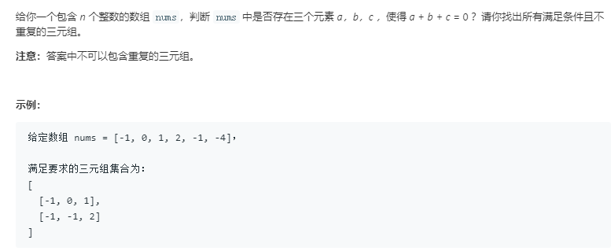
思路:
在一个有序数组中求解两个数之和，可以使用暴力遍历的方法，但时间复杂度很高。在这里，我们可以使用双侧指针法，先在数组两端各固定一个指针。当两数之和小于target时，左指针加1（由于是有序数组，会使和变大），当两数之和大于target时，右指针减1，等于target时，保存结果，并左右指针同时向内收缩。
那么，知道了两数之和问题的解决方案后，我们可以求解三数之和（本质上，任意n数之和都可以采取相同的方法）。我们先对数组进行排序，然后固定一个数，便可将问题转化为两数之和，接着对于该数之后的所有数进行两数之和的求解。求解完成后，我们可以接着固定下一个数，直到求出所有结果。
要注意的问题：
结果的去重（求解两数之和时，相同的数字不应重复使用。同时，固定的数若等于上个数，则他的所有情况都被上个数的遍历所包含，也可以跳过）。
性能的提升（剪枝，当右指针的数小于0时或者固定的数大于0时，三数之和必定不等于0，因为此时三个数都大于0或者都小于0）
时间复杂度：$O(N^2)+O(NlogN)=O(N^2)$
空间复杂度：$O(1)$
class Solution {
public static List<List<Integer>> threeSum(int[] nums) {
List<List<Integer>> ans = new ArrayList();
Arrays.sort(nums); # 排序
int len = nums.length;
if(nums == null || len < 3) return ans;
for (int i = 0; i < len ; i++) {
if(nums[i] > 0) break; // 如果当前数字大于0，则三数之和一定大于0，所以结束循环
if(i > 0 && nums[i] == nums[i-1]) continue; // 去重
int L = i+1;
int R = len-1;
while(L < R){
if (nums[R]<0){
break;
}
int sum = nums[i] + nums[L] + nums[R];
if(sum == 0){
ans.add(Arrays.asList(nums[i],nums[L],nums[R]));
while (L<R && nums[L] == nums[L+1]) L++; // 去重
while (L<R && nums[R] == nums[R-1]) R--; // 去重
L++;
R--;
}
else if (sum < 0){
while (L<R && nums[L] == nums[L+1]){
L++; // 去重;
}
L++;
}
else if (sum > 0) {
while (L<R && nums[R] == nums[R-1]){
R--; // 去重
} // 去重
R--;
}
}
}
return ans;
}
}第16题 最接近的三数之和
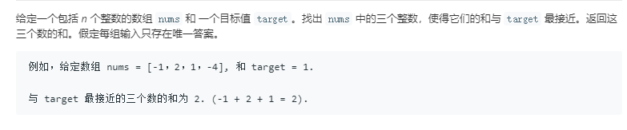
思路:
与第15题几乎没有区别，只是双指针收缩时，每次记录当前的三数之和，看与结果的差值是否为当前最小，最小则修改当前的最接近的三数之和。当差值为0时可以直接返回。
class Solution:
def threeSumClosest(self, nums: List[int], target: int) -> int:
nums.sort()
closest=nums[0]+nums[1]+nums[2]
diff=abs(closest-target)
for i in range(len(nums)-2):
if i>0 and nums[i]==nums[i-1]:
continue
L=i+1
R=len(nums)-1
while (L<R):
summa=nums[i]+nums[L]+nums[R]
if abs(summa-target)<diff:
closest=summa
diff=abs(closest-target)
if (summa>target):
R-=1
elif (summa<target):
L+=1
else:
return summa
return closest第18题 四数之和
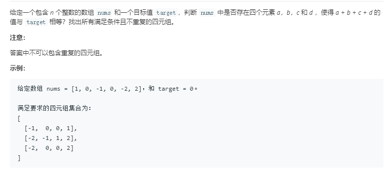
思路:
任意n数之和都求解，都可以先固定一个数，转化为n-1数之和问题，逐步转化，直到最后变为求解二数之和。这里的四数之和也是类似的道理，其去重的思想与三数之和也是一样的。
class Solution {
public static List<List<Integer>> fourSum(int[] nums,int target) {
List<List<Integer>> ans = new ArrayList();
Arrays.sort(nums); // 排序
int len = nums.length;
if(nums == null || len < 4) return ans;
for (int i = 0; i < len-3 ; i++) {//多固定了一个数，将问题转化为内部的三数之和
if(i > 0 && nums[i] == nums[i-1]) continue; // 去重
for (int j =i+1;j<len-2;j++){
if(j > i+1 && nums[j] == nums[j-1]) continue; // 去重
int L = j+1;
int R = len-1;
while(L < R){
int sum = nums[i] + nums[j]+nums[L] + nums[R];
if(sum == target){
ans.add(Arrays.asList(nums[i],nums[j],nums[L],nums[R]));
while (L<R && nums[L] == nums[L+1]) L++; // 去重
while (L<R && nums[R] == nums[R-1]) R--; // 去重
L++;
R--;
}
else if (sum < target) L++;
else if (sum > target) R--;
}
}
}
return ans;
}
}2020.3.6 （2 medium）
第17题 电话号码的字母组合
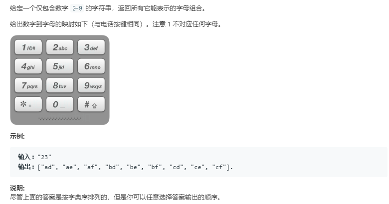
思路1:
打表+队列，类似于BFS。
class Solution:
def letterCombinations(self, digits: str) -> List[str]:
dic={'2':['a','b','c'],'3':['d','e','f'],'4':['g','h','i'],'5':['j','k','l'],'6':['m','n','o'],'7':['p','q','r','s'],'8':['t','u','v'],'9':['w','x','y','z']}
result=[]
for char in digits:
if result==[]:
result=dic[char]
else:
l=len(result)
for i in range(l):
st=result[0]
result=result[1:]#出队
for c in dic[char]:
result.append(st+c)#入队
return result时间复杂度:$O(3^M+4^N)$
思路2:
这里也可以使用回溯+递归的方法，将其看作是一个类似于全排列的问题。
class Solution:
def letterCombinations(self, digits):
"""
:type digits: str
:rtype: List[str]
"""
phone = {'2': ['a', 'b', 'c'],
'3': ['d', 'e', 'f'],
'4': ['g', 'h', 'i'],
'5': ['j', 'k', 'l'],
'6': ['m', 'n', 'o'],
'7': ['p', 'q', 'r', 's'],
'8': ['t', 'u', 'v'],
'9': ['w', 'x', 'y', 'z']}
def backtrack(combination, next_digits):
# if there is no more digits to check
if len(next_digits) == 0:
# the combination is done
output.append(combination)
# if there are still digits to check
else:
# iterate over all letters which map
# the next available digit
for letter in phone[next_digits[0]]:
# append the current letter to the combination
# and proceed to the next digits
backtrack(combination + letter, next_digits[1:])//这里可以看作是进行了回溯，因为直接使用了新的字符串，所以不用恢复状态
output = []
if digits:
backtrack("", digits)
return output第19题 删除链表的倒数第N个节点
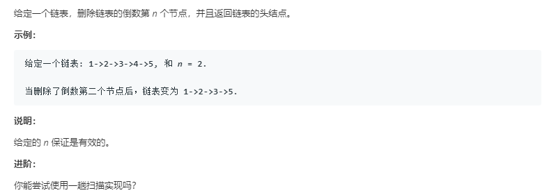
思路：
快慢指针法+dummy head。
快指针在前遍历链表，慢指针在后用于保存快指针的前第N个节点。当快指针遍历到链表的尾部，则可以使用慢指针删除节点。这里需要注意，当要删除的节点是第一个节点时，若使用题目中给出的头指针，需要分类讨论进行操作。为了不进行分类讨论，我们在链表开头处添加一个空的头结点（dummy head）。
时间复杂度:$O(N)$
空间复杂度:$O(1)$
# Definition for singly-linked list.
# class ListNode:
# def __init__(self, x):
# self.val = x
# self.next = None
class Solution:
def removeNthFromEnd(self, head: ListNode, n: int) -> ListNode:
fore_head=ListNode(0)
fore_head.next=head
p=fore_head
back_n=fore_head
while (p.next!=None):
p=p.next
if (n>0):
n-=1
elif (n==0)://n减到0时，才能移动慢指针，否则说明前第n个元素越界
back_n=back_n.next
back_n.next=back_n.next.next
return fore_head.next2020.3.7 （1 medium 1 hard）
第22题 括号生成
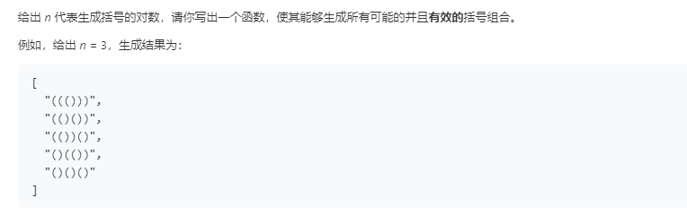
思路:
二叉树的先根遍历+剪枝。使用count记录当前字符串内左括号个数减去右括号个数的值，当count<0或者count>n，n为剩余的目标括号对数时，进行剪枝。
class Solution:
def generateParenthesis(self, n: int) -> List[str]:
count=0
st=''
result=[]
def dp(count,n,st):
if (0<=count<=n):#剪枝
if (n==0):#满足要求
result.append(st)
else:#先根遍历
dp(count-1,n-1,st+')')
dp(count+1,n,st+'(')
dp(count,n,st)
return result第23题 合并K个排序链表
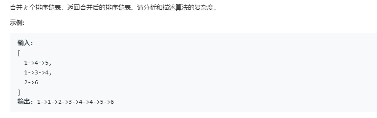
思路:
分治法，类似于标准归并排序的思想。先将相邻的链表两两合并，得到个数为原来一半的新链表，接着继续两两合并，重复直到只剩下最后一个链表，即为最终的结果。
两两合并的方法，采用的是双指针法，即两个链表各设置一个指针，用于比较和插入结果链表。
- 时间复杂度：$O(NlogK)$，N是所有链表中元素的总和，K是链表个数。
# Definition for singly-linked list.
# class ListNode:
# def __init__(self, x):
# self.val = x
# self.next = None
class Solution:
def mergeKLists(self, lists: List[ListNode]) -> ListNode:
def merge(list1,list2):#两两合并
p=list1
q=list2
head=ListNode(0)
m=head
while (p!=None) and (q!=None):
if p.val<q.val:
m.next=p
m=m.next
p=p.next
else:
m.next=q
m=m.next
q=q.next
if (p==None):
m.next=q
elif (q==None):
m.next=p
return head.next
amount = len(lists)
interval = 1
while interval < amount:#两两合并
for i in range(0, amount - interval, interval * 2):
lists[i] = merge(lists[i], lists[i + interval])
interval *= 2
return lists[0] if amount > 0 else lists为什么不使用逐一合并的算法呢？那样合并的过程写起来会很简单？
逐一合并的时间复杂度：$O(NK)$
因为这里的两两排序实际上运用了分治法的思想，逐一合并的话，每一次合并在最坏的情况下都需要比较N个节点，而两两合并，每一轮合并的最坏情况才需要比较N个节点。逐一合并需要进行（K-1）次，而两两合并仅需要进行（logN）轮，所以时间复杂度大大降低。

2020.3.8 （1 hard 1 medium）
第24题 两两交换链表中的节点
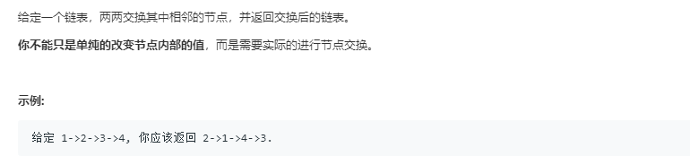
思路:
本质上就是两个一组翻转链表。可以使用头插法+dummy head。使用三个指针pre、p、q，将q结点插入至p结点之前，即完成了一次交换。然后移动指针至下两个节点处，继续交换。
# Definition for singly-linked list.
# class ListNode:
# def __init__(self, x):
# self.val = x
# self.next = None
class Solution:
def swapPairs(self, head: ListNode) -> ListNode:
h=ListNode(0)#dummy head
h.next=head
pre=h
p=head
if (head==None):
return head
else:
q=p.next
while (p!=None)and(q!=None):
p.next=q.next
q.next=p
pre.next=q
#两个一组翻转链表
pre=p
p=p.next
if p!=None:
q=p.next
#移动至下两个节点进行操作
return h.next第25题 K 个一组翻转链表

思路:
上一题的扩展，使用dummy head+头插法即可。
- pre指针：当前组的第一个节点的前一个节点，用于插入元素。
- q指针： 要插到头部的那个节点。
- p指针： q节点的前一个节点，用于删除q节点。
# Definition for singly-linked list.
# class ListNode:
# def __init__(self, x):
# self.val = x
# self.next = None
class Solution:
def reverseKGroup(self, head: ListNode, k: int) -> ListNode:
h=ListNode(0)
h.next=head
pre=h
p=head
count=0
t=pre.next
while(t!=None):#统计当前链表的长度
count+=1
t=t.next
if (head==None):
return head
else:
q=p.next
while (pre!=None) and (p!=None) and (q!=None):
if (count<k):#当前链表的剩余长度是否可以进行翻转
return h.next
for i in range(k-1):
p.next=q.next
q.next=pre.next
pre.next=q
q=p.next
#当前组内的节点进行头插法翻转
pre=p
p=pre.next
if p==None:
return h.next
q=p.next
count-=k
#指针移动至下一组开始处
return h.next2020.3.9 （3 easy）
第26题 删除排序数组中的重复项
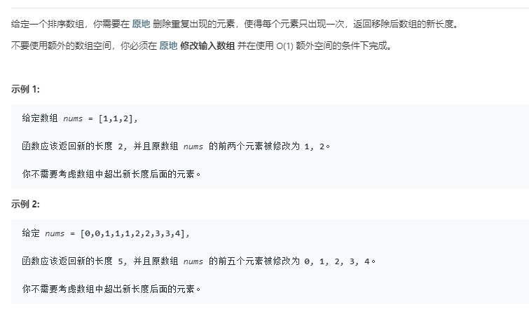
思路:
快慢指针法，慢指针指向当前数组内无重复的子序列的最后一项，快指针用于遍历整个数组。
- 当快指针指向的元素与慢指针指向的元素不相等时，将该元素加入至慢指针维护的无重复子序列中，慢指针和快指针都加1。
- 当元素相等时，快指针直接遍历下一个元素。
- 时间复杂度：$O(N)$
class Solution:
def removeDuplicates(self, nums: List[int]) -> int:
slow=0
for fast in range(1,len(nums)):
if (nums[slow]!=nums[fast]):
slow+=1
nums[slow]=nums[fast]
return slow+1#由于慢指针指向的是子序列最后一项的下标，子序列长度需要加1第27题 移除元素
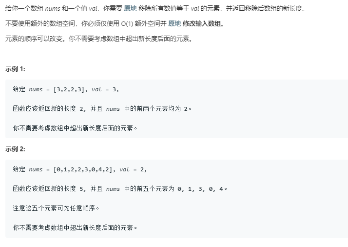
思路:
同样使用快慢指针法，快指针用于遍历，慢指针维护一个没有target元素的子序列，指向该子序列末尾的后一个元素。
class Solution:
def removeElement(self, nums: List[int], val: int) -> int:
slow=0
for fast in range(len(nums)):
if (nums[fast]!=val):
nums[slow]=nums[fast]
slow+=1
return slow这里，慢指针与26题有一些区别，27题的慢指针指向的是符合要求的子序列的后一项，而26题是最后一项。这是因为26题中，单个元素不可能重复，而27题中，单个元素也可能是需要被移除的。
第28题 实现 strStr()
思路:
KMP算法，具体可以看这里：KMP算法总结
2020.3.13 （2 hard 1 medium）
第41题 缺失的第一个正数
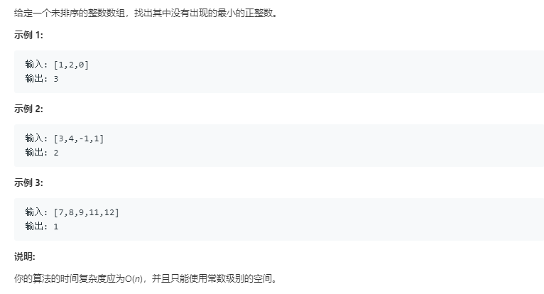
思路:
我们很容易想到利用哈希表（即字典）进行统计，然后去寻找第一个缺失的正数。但是考虑到题目的要求为时间复杂度$O(N)$以及常数级别的空间复杂度，我们可以考虑将数组自身作为一个哈希表，对应的哈希函数为:
$$f(nums[i])=nums[i]-1$$
通过哈希函数，将可以进行映射的数组元素映射到对应位置上，然后依次遍历寻找第一个映射不正确的位置即可。
复杂度分析：
时间复杂度：$O(N)$，这里$N$是数组的长度。
说明：while 循环不会每一次都把数组里面的所有元素都看一遍。如果有一些元素在这一次的循环中被交换到了它们应该在的位置，那么在后续的遍历中，由于它们已经在正确的位置上了，代码再执行到它们的时候，就会被跳过。最极端的一种情况是，在第 1 个位置经过这个 while 就把所有的元素都看了一遍，这个所有的元素都被放置在它们应该在的位置，那么 for 循环后面的部分的 while 的循环体都不会被执行。平均下来，每个数只需要看一次就可以了，while 循环体被执行很多次的情况不会每次都发生。这样的复杂度分析的方法叫做均摊复杂度分析。空间复杂度：$O(1)$。
class Solution:
def firstMissingPositive(self, nums: List[int]) -> int:
def swap(pos1,pos2):
nums[pos1],nums[pos2]=nums[pos2],nums[pos1]
size=len(nums)
for i in range(size):
while (0<nums[i]<=size)and (nums[i]!=nums[nums[i]-1]):#当当前位置的数字可以进行哈希映射，并且不在对应位置时，与对应位置的数字交换。如果重复了或者无法映射（不在范围内），则不映射。
swap(i,nums[i]-1)
for i in range(size):#寻找第一个不符合映射规则的位置
if nums[i]!=i+1:
return i+1
return size+1#都符合，那么就输出下一个正数注:为什么使用nums[i]!=nums[nums[i]-1]来判断而不是i!=nums[i]-1？
因为后者无法处理重复的数字。
第42题 接雨水
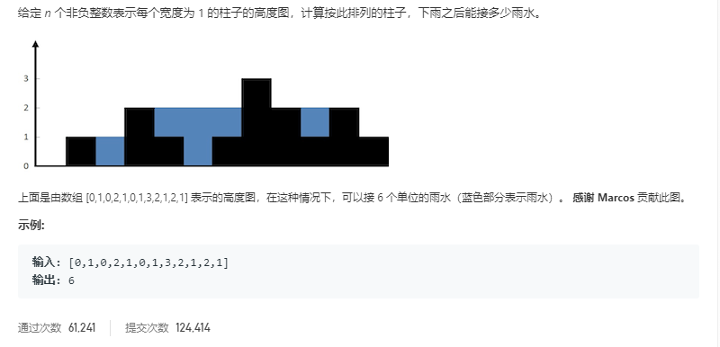
思路
双指针+左右各一次遍历。从左向右遍历时，保证左指针指向的是短板。右指针不断向前遍历，每次右指针遇到长板后，计算此时所形成的容器的容积，再将左指针移到右指针处，右指针继续向前遍历。直到右指针遍历到数组末尾。然后再用相同的方式反向搜索一遍即可。将所有容积相加即为答案。
时间复杂度:两次遍历，$O(N)$。
空间复杂度：$O(1)$。
class Solution:
def trap(self, height: List[int]) -> int:
left=0
right=left+1
water=0
while (right<len(height)):#从左向右
if height[right]>=height[left]:
width=right-left-1
tmp=0
for i in range(left+1,right):#减去被柱子占用的体积
tmp-=height[i]
tmp+=width*height[left]
water+=tmp
left=right
right+=1
right=len(height)-1
left=right-1
while (left>=0):#从右向左
if height[left]>height[right]:
width=right-left-1
tmp=0
for i in range(left+1,right):
tmp-=height[i]
tmp+=width*height[right]
water+=tmp
right=left
left-=1
return water优化
实际上，这里并不需要两次遍历，因为从左向右和从右向左的遍历都会在最高的柱子处停下。所以我们可以同时从两侧开始逼近，每次让左右指针较小的那个移动。
同时，我们可以维护一个left_max和right_max，即左右指针当前遍历到的最高柱。利用它们可以计算当前格子的积水。
class Solution:
def trap(self, height: List[int]) -> int:
left_max=0
right_max=0
left=0
right=len(height)-1
water=0
while left<=right:
if height[left]<height[right]:#确保不会越过山顶
if (height[left]>=left_max):
left_max=height[left]
else:
water+=left_max-height[left]#利用max变量求解当前格的积水
left+=1
else:
if (height[right]>=right_max):
right_max=height[right]
else:
water+=right_max-height[right]
right-=1
return water数组必有一个 ”山顶“（若有多个高度相同山顶，任取一个即可）。
根据”木桶原理“，山顶左侧的元素的盛水量 ，由左侧最大值决定；山顶右侧元素的盛水量，由右侧最大值决定。
双指针法的两个指针最终会停在 “山顶” 处。
第43题 字符串相乘
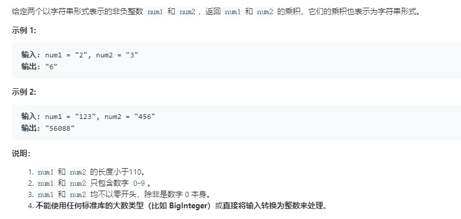
大数乘法问题，采取模拟竖式计算的方式求解。使用两个数组来存放两个数字字符串，数组的低位存数字字符串的低位。将第1个数组的第i位与第2个数组的第j位相乘，放入结果数组的第i+j位上。计算完成后，遍历结果数组，将所有大于9的进行进位操作。再反向遍历去掉最末尾的0。最后反向拼接成字符串输出即可。
class Solution:
def multiply(self, num1: str, num2: str) -> str:
numLi1=[int(x) for x in num1[::-1]]
numLi2=[int(x) for x in num2[::-1]]
len1=len(numLi1)
len2=len(numLi2)
res=[0 for x in range(len1+len2)]
for i in range(len1):#模拟两个数字的每一位相乘
for j in range(len2):
res[i+j]+=numLi1[i]*numLi2[j]
for i in range(len1+len2):#进位操作
if res[i]>9:
res[i+1]+=res[i]#10
res[i]%=10
for i in range(len(res)-1,0,-1):#去除结果开头的0
if res[i]==0 :
res.pop()
else:
break
res=[str(x) for x in res[::-1]]
return "".join(res)- 时间复杂度:$O(MN)$
- 空间复杂度:$O(M+N)$